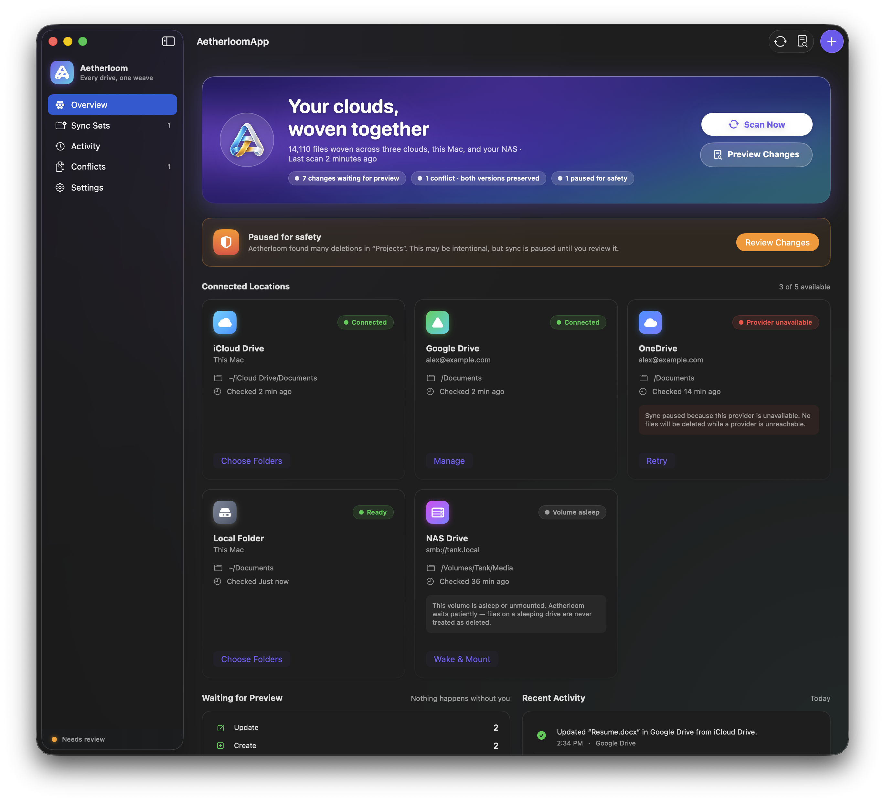

Keep your clouds interwoven.
Aetherloom is a native macOS app that keeps selected folders synchronized across iCloud Drive, Google Drive, OneDrive, local folders, and your NAS.

What it does
Choose folders. Aetherloom keeps them aligned, everywhere.
Pick folders — or eventually whole drives — and keep them synchronized across cloud services, local filesystem locations, and NAS-mounted folders. Built for people whose files live in more than one place.
Sync locations
- ●Cloud folders and drives — iCloud Drive, Google Drive, and OneDrive first
- ●Local folders on the Mac
- ●NAS-backed folders mounted through SMB, AFP, NFS, or other macOS-supported network filesystems
What gets synced
- ●New and edited files, and new folders
- ●Renames and moves
- ●Deletes — using each provider's trash or recycle bin
- ●Conflicts — by preserving both versions
Safety first
Nothing happens without you.
Cloud sync can be risky, so Aetherloom is designed to be cautious. It shows you what will happen before risky changes are applied — and pauses when a change set looks suspicious.
{{ pt.title }}
{{ pt.body }}
A look inside
Native on macOS, through and through.
{{ activeScreenCaption }}
Local & NAS
First-class sync locations, not an afterthought.
For local folders, Aetherloom uses native macOS folder selection, security-scoped access where needed, filesystem metadata, and safe local writes.
A mounted network share can disappear because the Mac slept, the network changed, credentials expired, or the NAS is temporarily unavailable. Aetherloom treats those states as provider unavailability — never as file deletion.
Deletes still follow the same philosophy: prefer trash, preserve conflicts, verify destination state before overwriting, and pause when the volume state is uncertain.
Current status
Early development, built in the open.
Aetherloom is young. The priorities below come first — follow along, open issues, or contribute on GitHub.
Follow the project →A note on iCloud Drive
iCloud Drive doesn't offer a general-purpose cloud file API like Google Drive or OneDrive. Aetherloom's iCloud support works through the local iCloud Drive folder on macOS.
Not a backup replacement
Aetherloom is a synchronization app, not a full backup system. You should still keep an independent backup of important files.
License
A license hasn't been chosen yet. The source is available to read on GitHub.